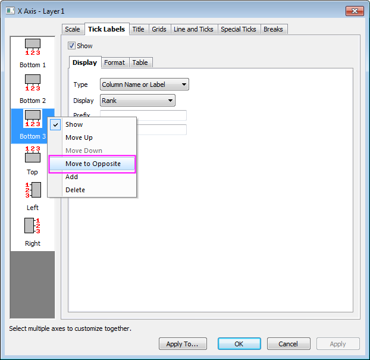
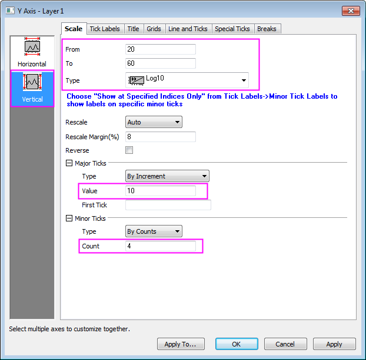

Unbalanciertes gruppiertes Boxdiagramm
UnbalanecedGroupedBoxChart
Zusammenfassung
Origin kann verwendet werden, um unbalancierte gruppierte Boxdiagramme aus Rohdaten mit benutzerdefinierten Tabellenachsen zu erstellen.
Origin-Version mind. erforderlich: 2015 SR0
Was Sie lernen werden
Dieses Tutorial zeigt Ihnen, wie Sie:
- ein unbalanciertes gruppiertes Boxdiagramm aus Rohdaten erstellen,
- eine obere Achsentabellenzeile mit zusätzlichen Gruppierungsinformationen hinzufügen,
- die Achsen der Tabelle benutzerdefiniert anpassen.
Schritte
Boxdiagramm aus Rohdaten erstellen
Dieses Tutorial basiert auf dem Projekt: <Origin-Verzeichnis>\Samples\Tutorial Data.opj.
- Öffnen Sie das Projekt Tutorial Data.opj und navigieren Sie zu dem Ordner Unbalanced Grouped Box Chart.
- Aktivieren Sie die Arbeitsmappe Book 3.
- Markieren Sie alle Spalten außer col(A). Wählen Sie im Menü Zeichnen: Kategorial: Gruppierte Boxdiagramme, Roh, um den Dialog Plotting: plotgboxraw zu öffnen. Setzen Sie im Dialog die Gruppenanzahl auf 2, die 1. Gruppenzeile auf Continents und die 2. Gruppenzeile auf Country. Ein Boxdiagramm wird erstellt, dessen Spaltendaten in drei Gruppen angeordnet sind und deren Zeilennamen der X-Achse aus den zwei ausgewählten Beschriftungszeilen des Arbeitsblatts stammen:
- Klicken Sie auf OK. Markieren Sie die Legende und löschen Sie sie, und das gruppierte Boxdiagramm wird aus Rohdaten mit zwei Gruppierungsebenen erstellt, wie unten gezeigt:

Achsentabelle benutzerdefiniert anpassen, um unbalancierte Gruppierungen anzuzeigen
- Die Farbe und der Abstand der Untergruppe müssen etwas bearbeitet werden. Beginnen Sie, indem Sie alle Felder auf Grau setzen. Wählen Sie im Menü Format: Zeichnung. Klicken Sie im Dialog Details Zeichnung auf die Registerkarte Gruppe. Setzen Sie das Inkrement für Randfarbe auf Kein und Untergruppe auf Kein, so dass die Randfarbe der Box nicht nach Datensatz inkrementiert.
- Gehen Sie zur Registerkarte Muster und duplizieren Sie die Einstellungen, wie unten gezeigt.
- Wechseln Sie zur Registerkarte Abstände und setzen Sie Abstand zwischen Untergruppen (in%) auf 0, um den Abstand zwischen den Untergruppierungen zu entfernen.
- Klicken Sie auf OK, um diese Einstellungen anzuwenden. Jetzt wird das unbalancierte gruppierte Boxdiagramm korrekt gezeichnet (die Beschriftungen werden später angepasst).
Eine obere Achsentabellenzeile hinzufügen
Sie fügen jetzt eine Achsentabelle oberhalb des Diagramms hinzu, um zusätzliche Gruppierungsinformationen anzuzeigen.
- Öffnen Sie den Dialog Achsen erneut (Format: Achsen: X-Achse). Gehen Sie zur Registerkarte Beschriftung der Hilfsstriche und klicken Sie nur im linken Bedienfeld auf das Symbol Unten 1.
- Wechseln Sie zur Registerkarte Tabelle auf der Seite Beschriftung der Hilfsstriche und setzen Sie Anzahl der Zeilen auf 3.
- Klicken Sie, um das neu hinzugefügte Symbol Unten 3 im linken Bedienfeld auszuwählen, und gehen Sie zur Registerkarte Anzeige, um die Liste Anzeige auf Rang zu setzen (beachten Sie, dass dies eine weitere Beschriftungszeile des Arbeitsblatts ist).
- Klicken Sie auf Anwenden, um die Änderungen zu sehen. Es wird eine neue Tabellenzeile zu der unteren X-Achse hinzugefügt. Als Nächstes verschieben Sie sie über das Diagramm.
- Klicken Sie mit der rechten Maustaste auf das Symbol Unten 3 im linken Bedienfeld und wählen Sie Auf die gegenüberliegende Seite verschieben.
- 
- Klicken Sie auf OK, um die Änderung anzuwenden.
Weitere benutzerdefinierte Anpassung
Im Weiteren sollen einige Anpassungen vorgenommen werden, so dass unser Diagramm aussieht wie das Bild in der Einführung dieses Tutorials.
- Klicken Sie doppelt auf die Gruppierungstabelle unten im Diagramm, um den Dialog Achsen aufzurufen, gehen Sie zur Registerkarte Beschriftung der Hilfsstriche und klicken Sie, um nur das Symbol Unten 1 erneut zu markieren.
- Wechseln Sie zur Registerkarte Tabelle und deaktivieren Sie das Kontrollkästchen Ferne parallele Grenze für Unten 1.
- Klicken Sie, um das Symbol Unten 2 im linken Bedienfeld zu markieren, deaktivieren Sie das Kontrollkästchen Auto und deaktivieren Sie die Kontrollkästchen Rahmen Innen und Rahmen Außen.
- Klicken Sie, um das Symbol Oben 1 im linken Bedienfeld zu markieren, und deaktivieren Sie die Kontrollkästchen Ferne parallele Grenze, Rahmen Innen und Rahmen Außen. Aktivieren Sie die Kontrollkästchen Hilfsstrich am Anfang einer Zelle und Hilfsstrich am Ende einer Zelle.
- Klicken Sie auf Anwenden und gehen Sie dann zur Registerkarte Linie und Hilfsstriche. Setzen Sie den Stil unter Große Hilfsstriche auf Innen & Außen.

- Wechseln Sie zur Registerkarte Gitternetze und passen Sie Haupt- und Nebenlinieneinstellungen der Gitternetze mit Farbe = Schwarz, Stil = Punkt und Dicke = 0,5 an.
- Klicken Sie auf Anwenden und gehen Sie zur Registerkarte Skalierung, klicken Sie auf das Symbol Vertikal im linken Bedienfeld und ändern Sie den Typ der Skalierung in Log10. Passen Sie die anderen Einstellungen, wie unten gezeigt, an.
- 
- Wechseln Sie zur Registerkarte Beschriftung der Hilfsstriche und geben Sie ein Suffix von % ein, um diesen Buchstaben auf jede der Beschriftungen der Y-Achse anzuwenden.
- Klicken Sie auf OK, um die obenstehenden Änderungen anzuwenden.

- Klicken Sie auf Format: Seite und setzen Sie Breite = 14,0 (Sie können die Einstellung der Höhe so lassen, wie sie ist).
- Klicken Sie doppelt auf die Country-Beschriftungen im Diagramm und legen Sie die Schrift mit Größe = 14 fest.
- Um einen Diagrammtitel hinzuzufügen, klicken Sie auf das Hilfsmittel Text, klicken Sie auf eine Stelle in der Überschrift des Diagramms und geben Sie Female Tertiary Education (ISCED 5 and 6) Enrollment ein. Ändern Sie den Titel der Y-Achse in Enrollment Rate.